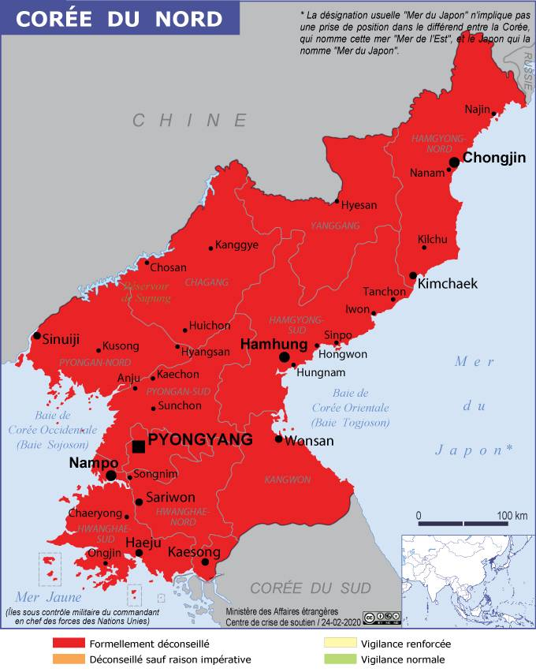

La France n'a pas de relation diplomatiques avec la République Populaire Démocratique de Corée (RPDC). En cas de difficulté, l'ambassade de France en Chine est compétente pour porter assistance aux Français se trouvant en Corée du Nord, sous réserve des contraintes pouvant être imposées par les autorités nord-coréennes. Le caractère répressif du régime nord-coréen, le non respect des droits et des libertés individuelles, et bien d'autres créent un climat d'incertitude et d'imprévisibilité. Les déplacements en Corée du Nord sont donc formellement déconseillés jusqu'à nouvel ordre.
Dans ce contexte, et en raison de la communication quasi-inexistante avec le monde exterieur et du manque d'informations liées à l'évolution de la pandémie du Covid-19 en Corée du Nord, l'ensemble du territoire est formellement déconseillé par les autorités françaises
Un visa est éxigé pour entrer sur le territoire de la Corée du Nord. Il peut être obtenu auprès de la Délégation Générale de la République Populaire Démocratique du Corée en France, dont les coordonées sont les suivantes :
3 Rue Asseline - 75014 Paris
Téléphone : 01.53.71.70.62
E-mail : dgcoree@outlook.fr
Nous rappelons que l'importation de matériel audio, y compris des radios, ou appareil de communication comme les téléphones céllulaires et les ordinateurs. Ces articles sont retenus à l'arrivée et sont généralement rendus aux voyageurs au moment de leur départ. Par ailleurs, les autorités peuvent également saisir des livres, cassettes audio et vidéo ou des documents faisant référence à une religion ou à de la politique.
Pour ce qui est du transport aérien, seul Air Koryo, la compagnie nationale nord-coréenne, inscrite sur la liste des compagnies aériennes faisant l'objet d'une interdiction d'exploitation dans l'Union Européenne, et Air China, la compagnie aérienne nationale de la République Populaire du Chine, sont habilité à pouvoir se poser sur le sol nord-corréen. Les transports en commun ou individuels ne sont accesibles uniquement en présence d'un guide.
Pour ce qui est des législations locales, le Code Civil nord-corréen, et toute forme de jurisprudence, ne sont pas accesible, dans la mesure de leur existence réelle. Toute forme de délit peut entraîner de lourdes conséquences, allant de plusieurs années d'emprisonnement à la peine capitale. En tant que touristes, les voyageurs sont obligés de demander la permission au guide local qui les accompagne.
Amabassade d'Allemagne en Corée du Nord
+850 02 381 7385
Amabassade du Royaume-Uni en Corée du Nord
+850 02 381 7980
Amabassade de Suède en Corée du Nord
+850 02 381 7485
Clinique des Nations Unies (Pyongyang)
+850 02 381 7585